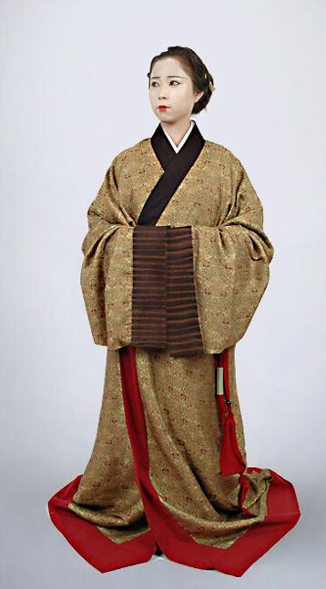
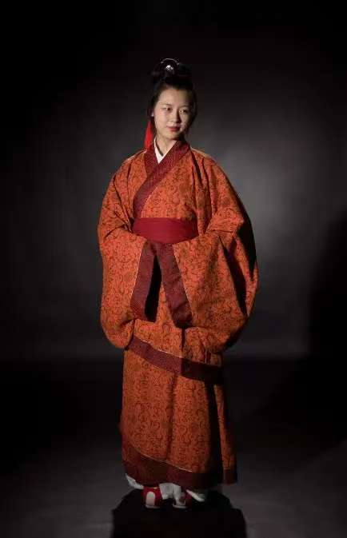
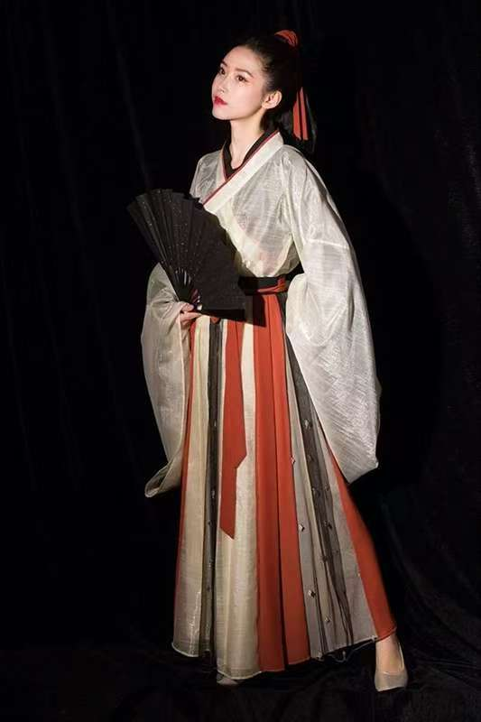
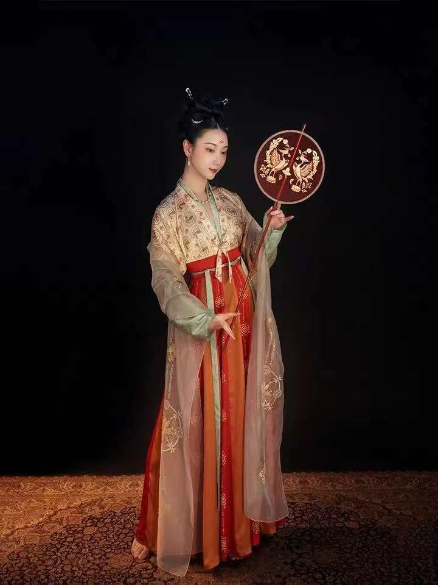
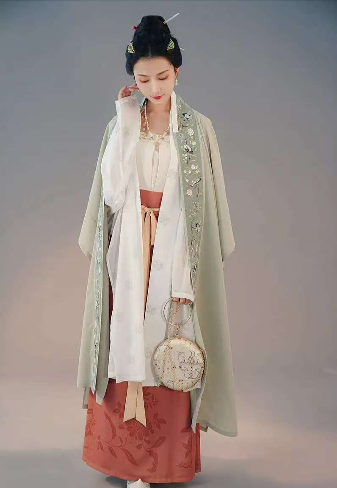
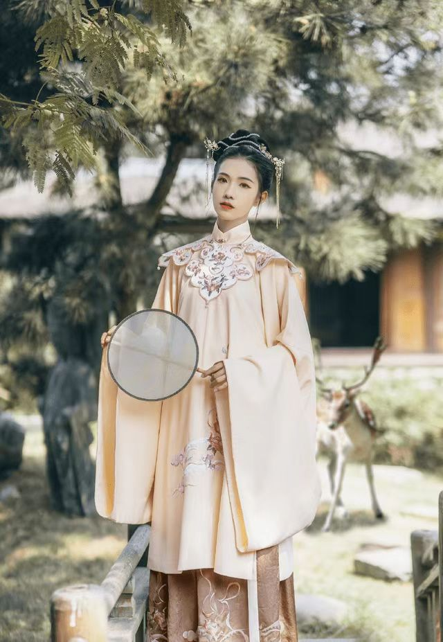

汉服，是汉民族的传统服饰，又称衣冠、衣裳、汉装，是中国“衣冠上国”“礼仪之邦”“锦绣中华”的体现，是中华优秀传统文化的重要载体，承载了中国的染织绣等杰出工艺和美学，传承了30多项中国非物质文化遗产以及受保护的中国工艺美术。
汉服起源自华夏文明早期，并于商周至汉代时期形成核心形制;它在后续的魏晋、隋唐、宋明等朝代中不断演变与发展，融合了不同时代的审美与文化，但在清朝初期因“剃发易服”政策而被迫中断。汉服“始于黄帝，备于尧舜”，源自黄帝制冕服；后经周朝建制、汉朝汉明帝时期修补定型，最终确定完整体系。此后各个华夏朝代均宗周法汉以继承汉衣冠为国家大事，于是有了二十四史中的舆服志。
汉服还通过中华法系影响了整个汉文化圈，亚洲各国如日本、朝鲜、越南、蒙古、不丹等的民族服饰均具有或借鉴汉服特征。
汉服采用幅宽二尺二寸的布帛剪裁而成，且分为领、襟、衽、衿、裾、袖、袂、带、韨等十部分。取两幅相等长度的布，分别对折，作为前襟后裾，缝合后背中缝。前襟无衽即为直领对襟衣。若再取一幅布，裁为两幅衽，缝在左右两襟上，则为斜领右衽衣。前襟后裾的中缝称为裻，即督脉、任脉，衽在任脉右侧，故称右衽。裾的长度分为腰中，膝上，足上。根据裾的长短，汉服有三种长度∶襦、裋、深衣。袖子与襟裾的接缝称为袼，袖口称为袪。一套完整的汉服通常有三层：小衣（内衣）、中衣、大衣。
汉服通常有交领右衽、褒衣广袖、系带隐扣等特征，但随着社会与审美的发展，其形制也不断丰富。演变出圆领、窄袖等更方便日常的形制。
| 时期 | 特点 | 主要形制 | 图片 |
| 先秦时期 | 庄重古朴，与宗法礼仪紧密结合 | 上衣下裳，深衣（直裾，曲裾）,战国袍 |  |
| 秦汉时期 | 大气威严 | 曲裾袍，直裾袍，襦裙 |  |
| 魏晋南北朝 | 洒脱飘逸，民族融合 | 交领、曲领晋襦，大袖襦，交窬裙（破裙），褶衣 |  |
| 唐朝 | 雍容华贵、大胆开放 | 圆领袍衫，齐胸襦裙 |  |
| 宋朝 | 修长素雅，含蓄理性 | 百迭裙，宋抹，褙子，短衫，长衫 |  |
| 明朝 | 端庄华贵，吉祥纹样 | 马面裙，琵琶袖，比甲 |  |
汉服本身虽在然清朝剃发易服等统治政策下消失了，但因其具有强大的生命力，其部分元素一直没有灭绝，直到现代汉族人信仰的道教、佛教以及一些边远山民，还有国内许多少数民族的服饰中都还保持着汉服的特征，现代社会的一些重要祭祀、纪念活动、民俗节日等也能看到汉服的部分元素。21世纪初，随着中国国力的发展，人们开始审视自己传统文化中的优秀部分。一些传统文化爱好者通过考据汉服并取其精华、去其糟粕，复原了汉族传统服饰，通过身着汉服过传统节日、推广传统学说、演奏传统乐器等形式重新宣导汉服，这个过程称为汉服运动。
随着文化自信的提升和传统文化的复兴，汉服在当代社会逐渐受到关注和喜爱。越来越多的年轻人开始穿着汉服参加各种活动，如传统节日庆典、婚礼、摄影等，汉服文化也通过社交媒体得到了广泛传播同时也诞生了很多知名汉服品牌，吸引更多年轻人了解汉服，穿着汉服。